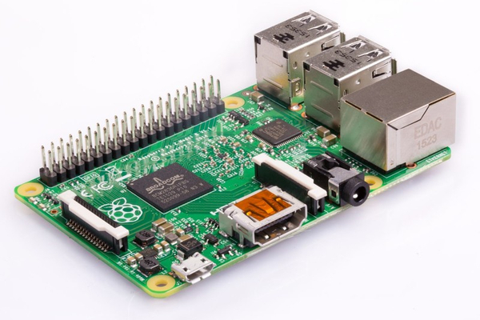

Small computing.
The small computing board category is a loose collection of single board devices that use silicon microchips connected to small metallic pins, which can be used either to detect and interpret inputs from external sensors and sources connected to the device or to send outputs to other devices, such as lights, displays or other electronic components. While some pins supply power, others can be harnessed with a programming language, such as Python, to perform defined tasks. The single-board category falls into two distinct groups, with Arduinos, Makey Makeys and other microcontrollers forming one group, while the more complex Raspberry Pis, and similarly-inspired devices, forming the second. The complexity of this second category comes from the Raspberry Pis also possessing an onboard microprocessor, giving it the ability to perform vastly more complex tasks simultaneously and allows it to position itself as a desktop computer replacement (Foxbot Industries n.d.), while microcontrollers are better suited to single, specific tasks, such are controlling servo motors, CNC mills (Shinganapure, 2020) and home automation (Conradie, 2020).
So. Much. Pi.
 Raspberry Pi 2 Model B, Image courtesy Raspberry Pi FoundationSeveral key positioning strategies have helped make the Raspberry Pi popular:
- Price is designed to be kept low, with at least one board in each generation launching at around US$30 (Raspberry Pi Foundation, n.d.), making it accessible to a wide range of socio-economic environments
- STEM Education focus, making the Pi an engaging learning tool for classrooms
- Open Source Software, allowing easy development and creativity outside the control of ownership
These decisions have fuelled an active developer movement and because open source encourages open source, a plethora of downloadable and modifiable software exists on freely accessible sources, such as Github and Hackaday. These learning and instructional sites not only facilitate education of the workings of the programs, but also, generally, encourage users to download, modify and develop the programming for the user's own needs. While the cost of the Raspberry Pi has increased steadily, with the most recent release being by far the most expensive, at US$75, a version with lower specifications is still available at $35 (Raspberry Pi Foundation, n.d.), remaining consistent with the foundation’s goal. While the device is far from capable of competing against even the lower end of Intel’s range, the newest model at time of writing, the Raspberry Pi 4B, features a four-core processor, and up to 8 GB ram, which is more than capable of outputting dual 4K video (Hildenbrand, 2020), handy for a capable media centre, mining cryptocurrency (Coward, 2017) or running several tasks at once. The device has made significant improvements over the previous model on memory throughput, image editing, network and USB speed benchmarks (Halfacree, 2019). On the back of the success of the Raspberry Pi, several alternatives have emerged, including OrangePi, BBC micro:bit, which was distributed free to one million British school children (Ranger, 2016) and Asus Tinker Board, the level of open source support and embracing of free expression may vary. But in terms of the pinnacle of what is available, Nvidia has developed a compute module, the Jetson Nano, which will soon spin off into stand-alone single board devices, aimed at artificial intelligence Internet of things, with “accelerated libraries for deep learning, computer vision... and more.” (Nvidia, n.d.)
Controlling but on a smaller scale
 Arduino Leonardo,
Image courtesy Arduino
Arduino Leonardo,
Image courtesy Arduino
Arduinos are a combination of hardware and software, both of which is open source. The design has diverged into many iterations (Arduino, n.d.), with the variations allowing the user to select boards with features appropriate to the specific application. In complex situations where clusters of board are required to be integrated and perform dependent tasks, having units share common platforms assists with ease of development. Like the Pis, a large set of boards with similar applications exists, including the Makey Makey, which is based around the same microcontroller as in the Arduino Leonardo (Arduino, n.d.) but is intended more for sensor connectivity to aid STEM education in children. As Arduinos are open source hardware, multiple clones and similar devices exist, however a standout in this space is the ESP32 LoRa, due to its onboard Wifi and Bluetooth connectivity, as well as Long Range (LoRa) radio capabilities, which are features either not available, or not available together, on the Arduino boards. The ESP32 LoRa, LoRa standing for Long Range, has stunning potential to build a mesh network (Nardi, 2020), a suite of property sensors or communications network for applications on large rural properties or national parks. In 2019 a small team launched a small public satellite, FossaSat-1, from New Zealand, and Youtuber Andreas Spiess built a $20 satellite tracking station, based on the ESP32 LoRa to communicate with the satellite (Spiess, 2019). While the generally open-sourced nature of this collection of devices creates potential for countless future development opportunities, it is the Raspberry Pi that arguably holds exciting potential. The key components of the board is the System on a Chip, which has been manufactured by Arm Holdings since the first edition of Pis (Raspberry Pi Foundation, n.d.). The speed and capabilities of the chips selected by Raspberry Pi Foundation have increased steadily over the generations, but with Nvidia’s investment in artificial intelligence and deep learning (Nvidia, n.d.), the afore mentioned Jetson development pipeline, and the company’s recent acquisition of Arm Holdings (Nvidia, 2020), it is hoped that not only can the maker movement be allowed to continue with cheap access to Arm SoCs, but that there will be new and accessible hybridisation between the current style Raspberry Pi offerings and outputs of Jetson.
What is the likely impact?
The continuation of inexpensive, relatively open source computing hardware and microcontroller hardware, and the open source software that goes with them has been disruptive to existing computer markets for desktops (Singh, 2015) and thin clients (Fleck, 2016). This is, however, foreshadowed by the potential these devices hold, especially when used in niche applications where highly customisable, low power, always-on devices (Jarvis, 2019), such as large scale, rapidly deployable medical monitors (Whittaker, 2020), and the efficiency that is provided can help save patient lives while reducing risk to medical staff. Newer devices such as 3D printers are also affected by faster printing speeds which can reduce up to 90% of the cost of urgently needed tools for humanitarian crises (Savonen et al, 2018). As AI and machine learning matures, any new, affordable and relatively unrestricted avenue to them is bound to open the door to a vast array of currently unpublished school education opportunities, DIY solutions, innovative life improvements, IoT developments, small business opportunities, and cheaper, more prevalent research paths. Swarm robotics (Schranz et al, 2020) is an example of a potential applications, with a fleet of tiny cleaning bots being deployed to rapidly clear entire or sections of floors ( Altshuler et al, 2005) in large spaces like convention centres, or to clean the windows of sky scrapers in entire city blocks, or even attend to time sensitive operations, like the removal of oil spills (Zahugi et al, 2013). In a pandemic-influenced world, swarm robots could be deployed to monitor and clean surfaces after they have been touched (University of California, 2020), or be deployed to rapidly or systemically disinfect public spaces, hospital wards or public transport. On Nvidia’s acquisition of Arm, both Nvidia CEO, Jensen Huang, and Arm Holdings CEO, Simon Segars, appear united in the thought that a partial decentralisation of AI is the future, where, as Huang states, “trillions of these small, autonomous computers, powered by AI [will be] connected to passively powerful cloud data centres in every corner of the world.” (Vincent, 2020) The immediate future of Nvidia’s plans with Arm appear to centre around cost savings and capability increases within existing data centres (Vincent, 2020), the parent company has been broadening its reach across various industries, also significantly increasing investment in AI startup companies (Nvidia, 2017). In the home development space, machine learning has potential applications in improving quality of life through learning the routines of people at home, and providing automatic environmental conditions. Having a device that offers to make a coffee or tea when someone is working or studying and starts feeling tired might seem like science fiction, but sensors to detect an individual’s fatigue and hydration levels do exist (Nield, 2016), as do many options of machines that can automatically make a coffee, which tells us that both programming languages and communication devices have reached a high level of maturity. The potential of combining inexpensive, single board devices with new technology is almost boundless, but it is the free or easy access to the technologies that will determine the proliferation of technologies, the level of creative development, and the equality in distribution of subsequent wealth and knowledge. While these devices are unlikely to reduce the overall numbers of jobs to any significant degree, the possibility of roles being phased out while new roles are created is strong. Businesses will need to adapt to new markets and new technologies, and new industries will be born. Medicine, manufacture, traffic flow, space industries, communication, agriculture, humanitarian aid can all clearly and directly benefit from these devices. As can people who want tea offered to and made for them, without needing to initiate the process themselves.
How will this affect us?
The use of these devices has already affected me and my household. The learning of applying Arduinos and the Raspberry Pi to control lighting and gather data from sensors is under way. I have plans for a project to control the colour temperature of lighting based on time of day, and the level of lighting, based on ambient light in the environment. I have ideas for another project to use lighting colour to assist with mood and mental health (Loving et al, 2005). The potential of going beyond the sensor-output, cause and effect relationship is very exciting to me. The concept of environment monitoring and AI interpreting the data to react to a given scenario has huge scope of application, and while AI is not the primary focus of this piece, it and small computing and sensing devices have the potential to form a symbiotic future, with many suggested applications requiring wearable or tiny computational modules in the device (Faggella, 2019). The resulting effect, however, largely depends on the motivation of those who develop and control the technology. It is precisely the low cost and power requirement, and ease of ability to deploy a vast quantity of these small devices, coupled with AI, that could be hugely beneficial to: individuals with accessibility requirements, food production, the environment, monitoring and responding to natural disasters (Marr, 2020), it could equally be used for nefarious purposes, like to control general public behaviour (Ng, 2020), down to the minutiae of monitoring and shaming, like publicly embarrassing those who wear sleepwear in Shanghai, China (van Boom, 2020). While there are many discussions around the application of ethical decision making in AI, it could be argued that the enforcement of ethical behaviour should be applied to those who develop or control the resulting AI, machine learning processes and the supporting small computing devices.
Referenced Links
#302 We build a 20 Dollars LoRa Satellite Ground Station and we follow the FossaSat-1 launch, Streaming video, Andreas Spiess, Switzerland, viewed 10 October, 2020, https://www.youtube.com/watch?v=5k0aM-PJzo8 Altshuler, Bruckstein, Wagner 2005, Swarm Robotics for a Dynamic Cleaning Problem, viewed 10 October, 2020. https://www.researchgate.net/publication/4170882_Swarm_robotics_for_a_dynamic_cleaning_problem Arduino n.d., Arduino Products, viewed 9 October, 2020. https://www.arduino.cc/en/Main/products Arduino n.d., Arduino Leonardo Schematic 3b.pdf, viewed 18 October, 2020. https://www.arduino.cc/en/uploads/Main/arduino-leonardo-schematic_3b.pdf Conradie, D 2020, Electric Window Mechanism Into a (sic) Electric Screen Door, viewed 17 October, 2020. https://hackaday.com/2020/09/29/electric-window-mechanism-into-a-electric-screen-door/ Coward, C 2017, Yes, You Can Mine Cryptocurrency on Your Raspberry Pi, viewed 10 October, 2020. https://www.hackster.io/news/yes-you-can-mine-cryptocurrency-on-your-raspberry-pi-84613d1a3f8d Faggella, D 2019, Artificial Intelligence for Government Surveillance - 7 Unique Use-Cases, Viewed 11 October, 2020. https://emerj.com/ethics-and-regulatory/artificial-intelligence-government-surveillance/ Fleck, C 2016, Can the Raspberry Pi Disrupt the Thin Client Market... And the PC industry, viewed 9 October 2020. https://www.citrix.com/blogs/2016/02/08/can-the-raspberry-pi-disrupt-the-thin-client-market-and-the-pc-market/ Foxbot Industries n.d., A Beginner's Guide to Microcontrollers, Foxbot Industries, viewed 10 October, 2020. http://foxbotindustries.com/a-beginners-guide-to-microcontrollers Halfacree, G 2019, Benchmarking the Raspberry Pi 4, viewed 11 October 2020. https://medium.com/@ghalfacree/benchmarking-the-raspberry-pi-4-73e5afbcd54b Hildenbrand, J 2020, Raspberry Pi 4 vs. Raspberry Pi 3: Should you upgrade?, viewed 10 October, 2020. https://www.androidcentral.com/raspberry-pi-4-vs-raspberry-pi-3 Jarvis, T 2019, Best Uses for Raspberry Pi 2019, viewed 11 October 2020. https://techordeal.tech/2019/best-uses-for-raspberry-pi-2019/ Loving, R, Kripke, D, Knickerbocker, N, Grandner, M, 'Bright green light treatment of depression for older adults [ISRCTN69400161]', BMC Psychiatry, viewed 10 October, 2020. https://www.ncbi.nlm.nih.gov/pmc/articles/PMC1309618/ Marr, B 2020, 8 Powerful Examples of AI For Good, viewed 11 October, 2020. https://www.forbes.com/sites/bernardmarr/2020/02/10/8-powerful-examples-of-ai-for-good/#3afb2154d18a Nardi, T 2020, Lora Mesh Network with Off-the-shelf hardware, viewed 9 October, 2020. https://hackaday.com/2020/02/26/lora-mesh-network-with-off-the-shelf-hardware/ Nield, D 2016, A new Wearable sensor can detect dehyradtion and fatigue, viewed 11 October, 2020. https://www.techradar.com/au/news/wearables/a-new-wearable-sensor-can-detect-dehydration-and-fatigue-1314024 Ng, A 2020, How China uses facial recognition to control human behaviour, viewed 11 October, 2020. https://www.cnet.com/news/in-china-facial-recognition-public-shaming-and-control-go-hand-in-hand/ Nvidia 2017, The Future of AI, viewed 10 October, 2020. https://images.nvidia.com/content/technologies/volta/NVIDIA-Volta-GPU-Architecture_The-Future-of-AI.pdf Nvidia, n.d., Jetson Nano, viewed 9 October, 2020. https://developer.nvidia.com/buy-jetson Nvidia, n.d., The Nvidia EGX AI Platform, viewed 10 October, 2020. https://www.nvidia.com/en-au/data-center/products/egx-edge-computing/ Nvidia, 2020, Nvidia to Acquire Arm for $40 Billion, Creating World's Premier Computing Company for the Age of AI, viewed 10 October, 2020. https://nvidianews.nvidia.com/news/nvidia-to-acquire-arm-for-40-billion-creating-worlds-premier-computing-company-for-the-age-of-ai Ranger, S 2016, BBC Micro Bit: One Million kids to get them for free, and now you can buy one too, viewed 9 October, 2020. https://www.zdnet.com/article/bbc-micro-bit-one-million-kids-get-them-for-free-and-now-you-can-buy-one-too/ Raspberry Pi Foundation n.d., FAQs, viewed 10 October, 2020. https://www.raspberrypi.org/documentation/faqs/ Savonen, Mahan, Curtis, Schreier, Gerhenson, Pearce, Development of a Resilient 3-D Printer for Humanitarian Crisis Response, viewed 11 October, 2020. https://www.mdpi.com/2227-7080/6/1/30/pdf Schranz, Umlauft, Sende, Elmenreich, Swarm Robotic Behaviours and Current Applications, viewed 9 October, 2020. https://www.frontiersin.org/articles/10.3389/frobt.2020.00036/full Singh, A 2015, Is the Raspberry Pi a Disruptive Force in the Computer Market?, viewed October 9, 2020. https://www.linkedin.com/pulse/raspberry-pi-disruptive-force-computer-market-dr-avtar-sehra Shinganapure, S 2020, How to Make a Mini CNC Machine, Arduino, Viewed 17 October, 2020. https://create.arduino.cc/projecthub/shubhamsuresh/how-to-make-mini-cnc-machine-7f4bf7 University of California 2020, How robots can help combat COVID-19, ScienceDaily, viewed OCtober 9, 2020. https://www.sciencedaily.com/releases/2020/03/200325143812.htm Whittaker, A 2020, University of Toronto supports COVID-19 patient monitoring with Raspberry Pi, viewed 12 October, 2020. https://www.raspberrypi.org/blog/university-of-toronto-supports-covid-19-patient-monitoring-with-raspberry-pi/ van Boom, D 2020, Chinese city uses surveillance tech to shame citizens for waering pajamas outside, viewed 11 October, 2020. https://www.cnet.com/news/chinese-city-uses-surveillance-tech-to-shame-citizens-for-wearing-pajamas-outside/ Vincent, J 2020, Nvidia's $40 billion Arm acquisition is about bringing AI down from the cloud, viewed 12 October, 2020. https://www.theverge.com/2020/9/14/21435890/nvidia-arm-acquisition-40-billion-ai-cloud-edge-why Zahugi E.M.H., Shanta M.M., Prasad T.V. 2013, 'Oil Spill Cleaning Up Using Swarm of Robots', in Advances in Computing and Information Technology. Advances in Intelligent Systems and Computing, vol 178. Springer, Berlin, Heidelberg. https://doi.org/10.1007/978-3-642-31600-5_22